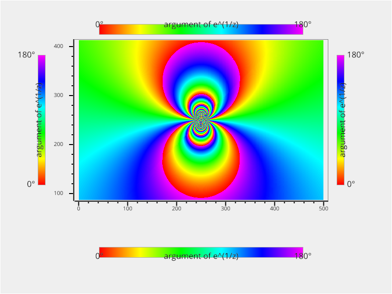

Note
Click here to download the full example code
Plot different styles of ColorBar¶
Out:
/home/runner/work/vispy/vispy/examples/plotting/colorbar.py:16: DeprecationWarning: `np.complex` is a deprecated alias for the builtin `complex`. To silence this warning, use `complex` by itself. Doing this will not modify any behavior and is safe. If you specifically wanted the numpy scalar type, use `np.complex128` here.
Deprecated in NumPy 1.20; for more details and guidance: https://numpy.org/devdocs/release/1.20.0-notes.html#deprecations
z = np.complex(x, y)
from vispy import plot as vp
import numpy as np
# arg( e^(1/z) )
def exp_z_inv(x, y):
z = np.complex(x, y)
f = np.exp(1.0 / z)
return np.angle(f, deg=True)
# create a 2d grid whose elements are of exp_z_inv
def gen_image(width, height):
x_vals = np.linspace(-0.5, 0.5, width)
y_vals = np.linspace(-0.5, 0.5, height)
grid = np.meshgrid(x_vals, y_vals)
v_fn = np.vectorize(exp_z_inv)
return v_fn(*grid).astype(np.float32)
fig = vp.Fig(size=(800, 600), show=False)
plot = fig[0, 0]
plot.bgcolor = "#efefef"
img = gen_image(500, 500)
plot.image(img, cmap="hsl")
plot.camera.set_range((100, 400), (100, 400))
positions = ["top", "bottom", "left", "right"]
for position in positions:
plot.colorbar(position=position,
label="argument of e^(1/z)",
clim=("0°", "180°"),
cmap="hsl",
border_width=1,
border_color="#aeaeae")
if __name__ == '__main__':
fig.show(run=True)
Total running time of the script: ( 0 minutes 5.223 seconds)